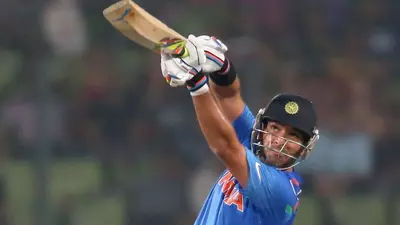

Yuvraj Singh
Personal Information
Full Name: Yuvraj Singh
Born: December 12, 1981
Birthplace: Chandigarh, India
Batting Style: Left-hand bat
Role: All-rounder
Key Records
- Hit 6 sixes in an over during a T20 World Cup match
- Man of the Tournament in the 2011 Cricket World Cup
- Instrumental all-round performances in major tournaments
- Exceptional power-hitting in limited overs
- Played several match-winning innings for India
- Multiple international centuries in both ODIs and Tests
- Consistent and athletic fielding throughout his career
- Key ambassador for Indian cricket globally
- Recipient of numerous ‘player of the match’ awards
- An inspiration and role model for upcoming cricketers